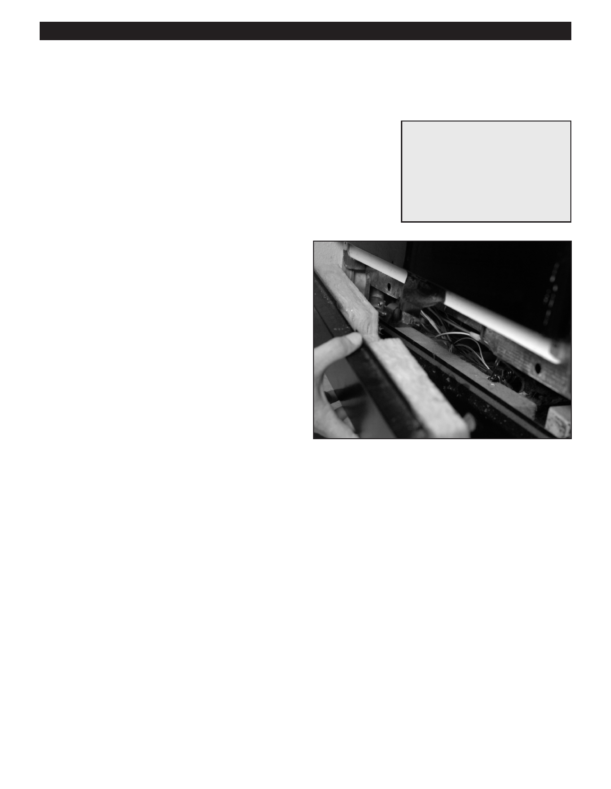

PA RT I C I PA N T R E S O U R C E G U I D E
Cleaning the Dishwasher Drain Hose
If water pools under the dishwasher, the problem may be a clogged drain hose.
Safety
Tools and Materials Needed
Make sure the power to the dishwasher is off.
Screwdriver
Use lockout/tagout procedures.
Lockout/tagout device
Pan to collect the water
Wear eye protection when working with electrical systems.
Water and bleach solution
Wear hand protection when cleaning out hoses and working with chemical
Rags or towels
solutions.
How-to Steps
1. Unplug dishwasher or turn off electricity to dishwasher
at main electrical panel.
2. Lockout/tagout at the panel.
3. Turn off the water supply to the dishwasher.
4. Remove the lower panel of the dishwasher.
5. Put a pan or bowl under the pump to collect excess
water.
6. Loosen the drain hose clamp.
7. Disconnect the hose from the pump.
8. Disconnect the other end of the hose from the drain
or garbage disposer under the sink.
9. Clean hose with water and bleach. If worn, replace.
10. Reattach hose to drain/garbage disposer and pump.
11. Remove pan or bowl. Wipe up excess water on floor.
12. Attach lower panel of dishwasher.
13. Turn on water supply.
14. Turn on electricity to dishwasher.
15. Turn on dishwasher and check operation.
Notes:
68